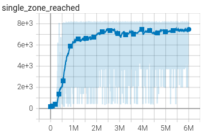

Getting started
In this page, we run the code with default training hyperparameters. At the end of the page, users should know what a normal training looks like, how to access training logs and how to obtain replays for the AI runs.
Setup
The code is set up to train on ESL-Hockolicious. Download the map and place it at the location: %%documents%%/TrackMania/Tracks/Challenges/ESL-Hockolicious.Challenge.Gbx
These instructions assume that no modifications were made to the files since cloning the Linesight repository, except for config_files/user_config.py. If needed, the repository can be restored to its original unconfigured condition with the following command:
git reset HEAD --hard
Start training
We are ready to start training.
python scripts/train.py
Upon running this command, it is expected that a wall of text appears in your terminal. Don’t worry, this is normal.
A few seconds after running this command, two instances of the game will be launched in windowed mode. Be aware that if these windows are minimized, the game will pause and that game instance will no longer generate experiences. You may hide game instances by placing other windows on top.
A few seconds after launching the game, the script will load the map automatically. There is no need for the user to interact with the game menu when launching the training script.
Reinforcement learning agents are trained by trial and error. It is expected that the agent tries random actions when it is untrained: these actions will improve gradually as the agent learns a better policy.
Tensorboard monitoring
Start the tensorboard local server to monitor training.
tensorboard --logdir=tensorboard --bind_all --samples_per_plugin "text=100000000, scalars=100000000"
The tensorboard interface can be accessed with a web browser at http://localhost:6006/.
The tab “Custom Scalars” at the top is preconfigured with a default layout. Graphs are plotted with number of interaction steps between the agent and the game on the X axis. The explanations below are intended for a general audience and may omit nuances that would stand out to a RL researcher.
Early training
This part focuses on the initial training phase, during the first 3 to 5 million steps.
- We start by looking at the graph
avg_Q, which represents the average reward the AI expects to receive. An untrained AI expects no reward: the graph starts near zero.
As training progresses, the AI correctly identifies that it doesn’t play properly: its prediction of future rewards is going down.
With time, the AI learns that “press forward and avoid walls” is a good strategy. Its estimation of future rewards starts to increase.

We also look at the single_zones_reached graph, which represents how far each run of the AI advances along the track.

It takes 300k steps for the agent to learn to press forward at the start
It takes 500k steps for the agent to finish the map for the first time
It takes 1M steps for the agent to regularly finish the map
{kind=link}
Focusing on the loss graph, the loss increases during the first 500k steps. This is a sign that the agent correctly identifies inconsistencies between its understanding of the environment and the transitions observed. Contrary to usual expectations in supervised learning, it is not a worrying sign to see the loss increase in reinforcement learning.

End of training
After relatively quick progress during the first 3-5M steps, the AI typically reaches a time in the low 54 seconds on ESL-Hockolicious. Progress now slows down, and can be monitored with the eval_race_time_robust graph.
{kind=link}
One may also monitor the explo_race_time_finished graph and notice the overall worse times and larger spread. This illustrates the difference between exploratory runs and evaluation runs. In exploration mode, the AI plays random actions with 3% chance: this is the mechanism that allows the agent to find improvements to its current policy. In evaluation mode, random actions are disabled to evaluate the agent’s current performance.

You may compare the result of your training with the authors’ included in the git repository under the name default_hocko_training.
Replay an AI run
During training, progress is regularly saved in files named save/{run_name}/best_runs/{map_name}_{time}/{map_name}_{time}.inputs.
To replay an AI run:
copy the file to
{mydocuments}/TMInterface/Scripts/open a game instance, load the map
open the in-game TMI console and type
load {map_name}_{time}.inputssave the corresponding replay